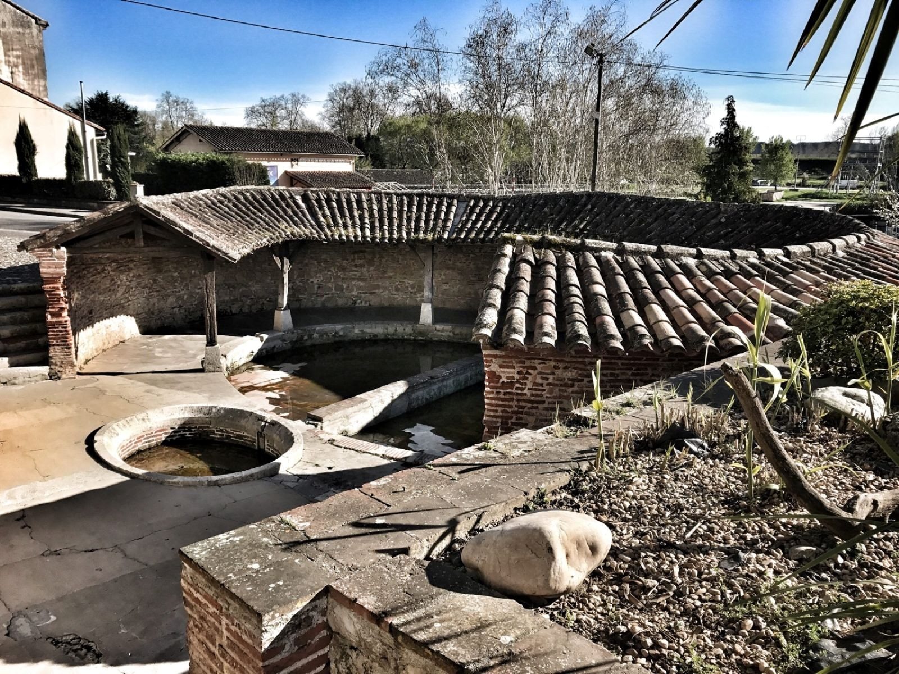
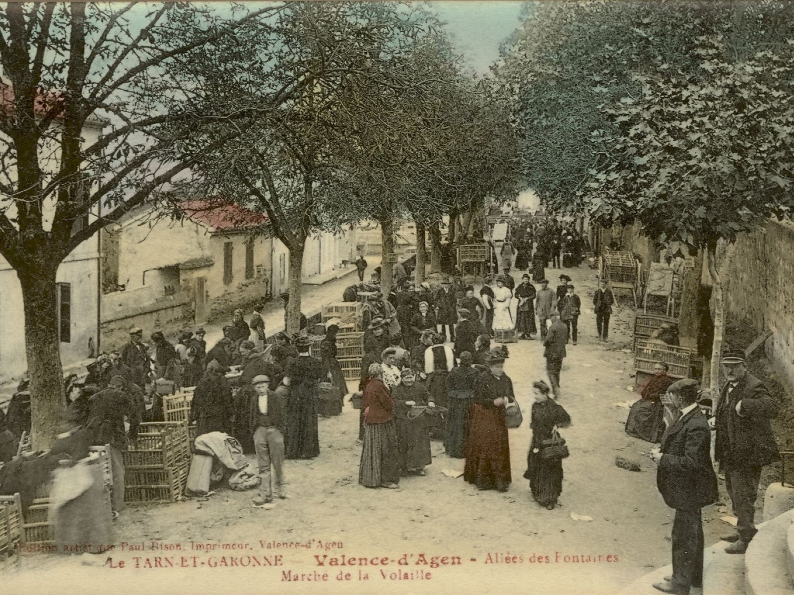

C’est le plus ancien des trois lavoirs de la ville. Dés 1661, la fontaine fit l’objet de réparations de la part des consuls et une pierre gravée de leurs noms et des armoiries du seigneur maquis de Valence fut érigée au-dessus de la fontaine. En 1880, le mauvais état du lavoir nécessita des réparations, le Conseil Municipal de l’époque décida notamment qu’il devait étre carrelé

Cette place carrée, entourée primitivement de maisons à ambans était le cœur de la bastide. En son centre fut construite la maison commune entourée elle-méme d’ambans sous lesquels les marchands étalaient leurs marchandises les jours de marchés.


C’est sur l’emplacement des anciens fossés de la ville que l’on établit la belle promenade des fontaines. 13 Pour y accéder plus commodément, on peréa une quatriéme porte de ville é proximité de la place centrale, à l’extrémité de la rue qui, depuis lors, à toujours porté le nom de Porte-Neuve. .